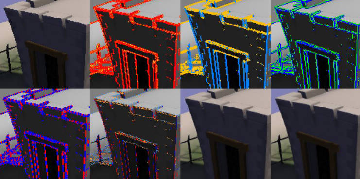
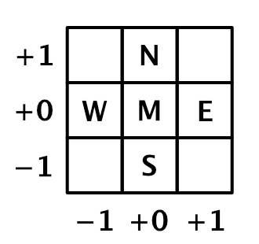
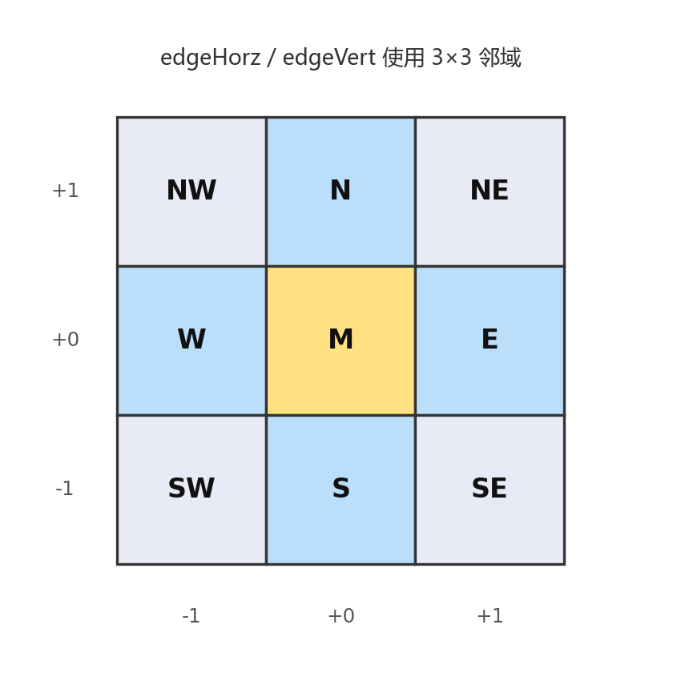
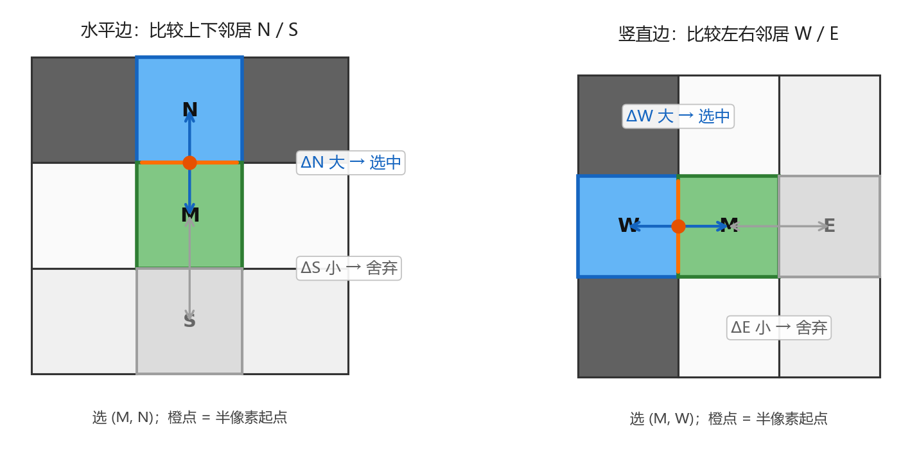
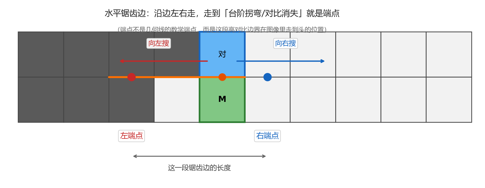
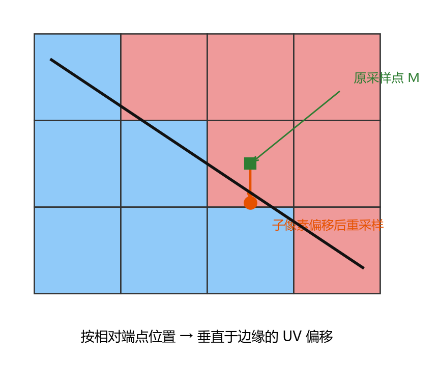
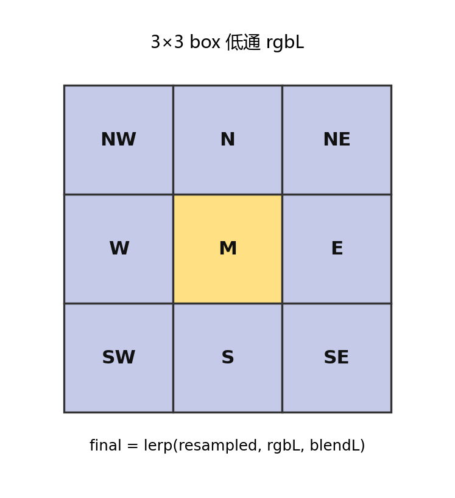

FXAA-快速近似抗锯齿
核心思想
FXAA（Fast Approximate Anti-Aliasing）由 NVIDIA 的 Timothy Lottes 提出，是一种单 Pass、屏幕空间的后处理抗锯齿算法。它不依赖 MSAA 等多采样几何信息，只对最终颜色图做一次全屏滤波，就能同时缓解三角形边缘锯齿和着色结果中的亚像素闪烁。
核心思路可以概括为：
- 找边缘：用亮度对比度找边缘，平坦区域跳过。
- 定方向并搜端点：判断边是横还是竖，再沿边找两端，得到像素在边上的位置。
- 垂直偏移重采样：按位置算出垂直于边的 UV 偏移，重新采样，抹平锯齿。
- 低通混合：按亚像素锯齿强弱再混入一点模糊。
与传统 MSAA 相比，FXAA 成本低、易集成（一个像素着色器即可），但本质是图像空间近似，可能轻微软化细节；质量与性能可通过搜索步数、对比度阈值等参数调节。
流程概述
下图对应 NVIDIA 白皮书中的调试可视化流程（各步颜色含义见下文）：

亮度估计
输入为非线性 RGB，内部转换为标量亮度，供后续对比度与边缘逻辑使用。局部对比度检测（跳过非边缘）
检查 local contrast，对比度过低的区域视为非边缘，不再处理。调试图中：检测到的边缘为红色，向黄色混合表示 sub-pixel aliasing 的强弱（FXAA_DEBUG_PASSTHROUGH）。边缘方向分类
通过局部对比度判断边缘主方向：金色为水平边，蓝色为竖直边（FXAA_DEBUG_HORZVERT）。选取垂直于边缘的高对比像素对
在垂直于边缘的方向上，选出对比度最高的一对邻居像素，用蓝/绿标出该对位于边缘哪一侧，从而把边定位到“哪两个像素之间”（FXAA_DEBUG_PAIR）。沿边缘双向搜索端点
沿边缘负向与正向（红/蓝方向）搜索，观察高对比像素对的平均亮度是否发生显著变化；变化足够大或达到搜索上限时，视为边缘末端（FXAA_DEBUG_NEGPOS）。计算垂直于边缘的子像素偏移
由像素在边缘两端之间的相对位置，换算成垂直于边缘 90° 方向上的子像素 UV 偏移，以削弱锯齿。调试图中：红/蓝表示水平方向负/正偏移，金/天蓝表示竖直方向负/正偏移（FXAA_DEBUG_OFFSET）。按偏移重新采样
用带偏移的坐标对输入颜色贴图再采样一次。亚像素低通混合
最后按检测到的 sub-pixel aliasing 强度，将低通滤波结果与当前结果做 blend，进一步抑制细小闪烁。
算法
第一步：亮度估计
后续边缘判断都基于标量亮度，而不是 RGB。作为优化，FXAA 只用 R、G 估计亮度（实践中纯蓝锯齿很少见），一次乘加即可：
对应代码：
float FxaaLuma(float3 rgb) {
return rgb.y * (0.587 / 0.299) + rgb.x;
}
第二步：局部对比度检测
取当前像素 及其正交邻居 （如下图），计算局部亮度最大、最小值之差作为对比度：

若对比度过低，视为非边缘，直接返回原色，避免平坦区域被模糊：
其中 为 FXAA_EDGE_THRESHOLD（相对阈值）， 为 FXAA_EDGE_THRESHOLD_MIN（暗部下限，避免极暗区域仍被处理）。常见取值：（高质量）、。
第三步：亚像素锯齿检测
用正交邻居的平均亮度作为局部低通，与中心亮度差得到像素对比度，再除以第二步的 ，得到亚像素锯齿强度，并映射为后续低通混合系数 ：
其中 =FXAA_SUBPIX_TRIM（默认常取 ），=FXAA_SUBPIX_TRIM_SCALE，=FXAA_SUBPIX_CAP 为 的上限。白皮书常见取值：
- ：默认，限制低通混合强度，保住细特征
- ：过滤更强
- ：不封顶， 最大可到 1
单像素点状锯齿时 接近 1，混合更强；靠 封顶可避免细线/纹理被抹成一片。
第四步：边缘方向判断
补齐 3×3 角点亮度后，分别估计水平/竖直高通响应（Sobel 类加权），较大者决定主方向：

若 ，则边缘偏水平（后续沿水平搜端点、沿竖直做偏移）；否则为竖直边。这样比单纯 Sobel 更能抓住穿过像素中心的细线。
第五步：选取高对比像素对
边缘方向已知后，还要判断边落在 的哪一侧：在垂直于边缘的两个邻居上比梯度，取更大的一侧与 组成像素对。
规则（与下图左右一一对应）：
- 水平边：比较上下邻居，取 、 中较大者
- 竖直边：比较左右邻居，取 、 中较大者

左图暗在上、亮在下，，故选 ；右图暗在左、亮在右，，故选 。边就被定位到这一对像素的交界上。
再用该最大对比度定搜索阈值，并把采样起点沿所选方向挪 半个像素（图中橙点）：
第六步：沿边缘双向搜索端点
端点是什么？
第五步只知道「边夹在哪两个像素之间」，还不知道这段锯齿有多长。真实边缘常常是台阶状的：走一段后会拐弯，或对比变弱。端点 = 当前这段高对比边界走到头的位置（不是数学直线的端点）。
为什么要找？
后面要根据「 离两端谁更近」决定垂直偏移多大：靠近拐角（端点）处锯齿更明显，偏移更大；靠近中段则偏移更小。
怎么找？
从第五步的半像素起点出发，沿着边缘（水平边就左右走，竖直边就上下走）两边同步搜索。每走一步，看当前位置那一对像素的平均亮度是否相对起点发生了明显变化（超过 ）：变了就认为该侧到头；两边都找到或步数用尽就停。

上图是水平锯齿边：绿 与蓝「对」是第五步选出的像素对；橙线是沿边搜索的路径；红/蓝点是左右端点——左边走入「上下都变暗」，右边走入「上下都变亮」，对比不再维持，边就结束了。
lumaAvg = 0.5 * (luma(M) + luma(pair)); // 起点平均亮度
for (i = 0; i < FXAA_SEARCH_STEPS; i++) {
if (!doneN) lumaEndN = avgLuma(pair at posN);
if (!doneP) lumaEndP = avgLuma(pair at posP);
doneN = doneN || abs(lumaEndN - lumaAvg) >= gradient;
doneP = doneP || abs(lumaEndP - lumaAvg) >= gradient;
if (doneN && doneP) break;
if (!doneN) posN -= step; // 负向再走一格
if (!doneP) posP += step; // 正向再走一格
}
低质量预设可用各向异性过滤加速搜索（一次跨多像素），但可能引入轻微抖动。
第七步：子像素偏移与重采样
由当前像素到两侧端点的距离 ，取较近端，换算成垂直于边缘的子像素偏移：
越靠近端点，偏移越大（锯齿阶梯更明显处多抹一点）。再与第三步的亚像素项取较大者，沿垂直于边缘方向偏移 UV 并重采样：

uv += dirPerp * finalOffset * texelSize;
rgbF = tex.Sample(uv); // 双线性过滤给出“抹平”后的颜色
若端点亮度变化方向与中心相对像素对平均亮度的关系不一致，则说明搜过头，将该侧 置 0。
第八步：低通混合输出
对完整 3×3 邻域做 box 低通得到 ，再按第三步算出的 与重采样结果混合：

其中 ，即按权重 在 与 之间线性插值。这里 ：为 0 时保留重采样色 ，为 1 时全用低通色 。
大时（如单像素闪烁）多混低通；小时则主要保留第七步的边缘偏移结果，兼顾锐度与平滑。